{kind=link}

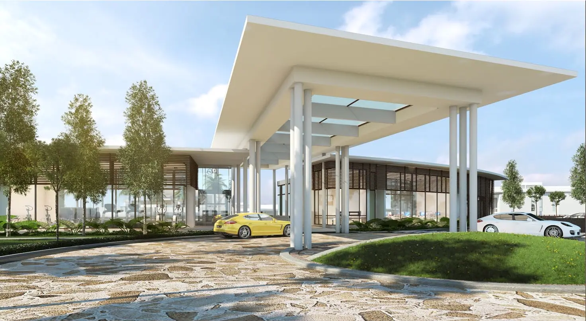
🏢 Putrajaya Homes Sdn Bhd (PjHOMES — Putrajaya Holdings) · 📍 Presint 8, Putrajaya, Putrajaya
Tapis ikut kategori. Klik gambar untuk besarkan (boleh zum dan tatal).
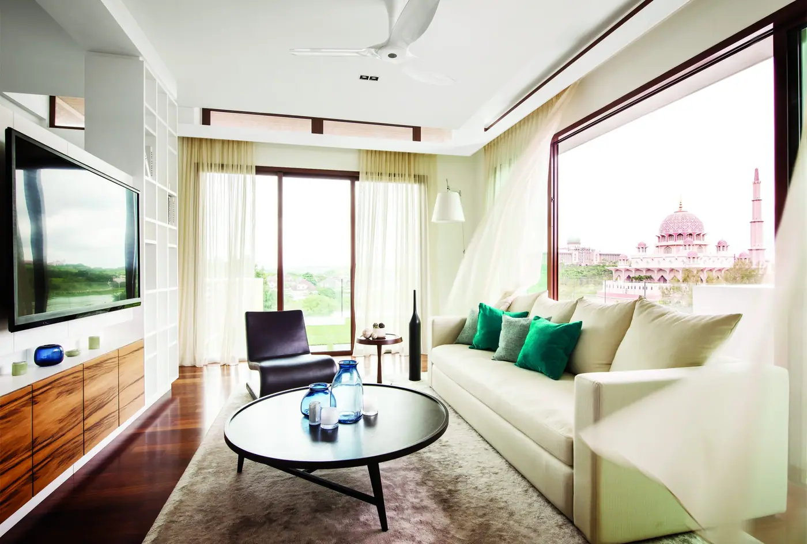
1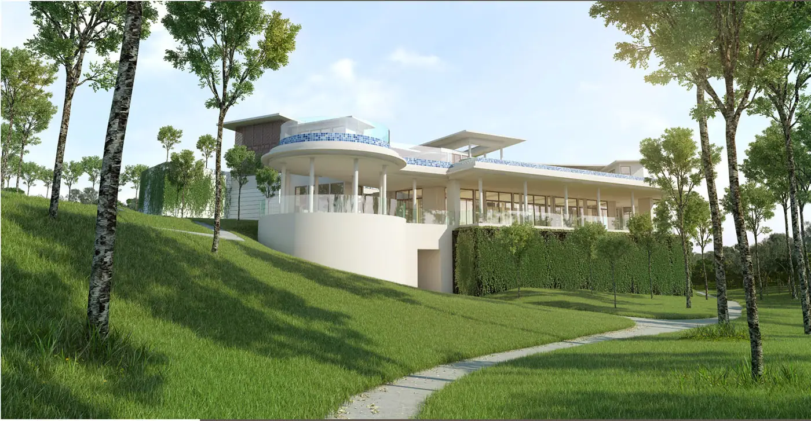
3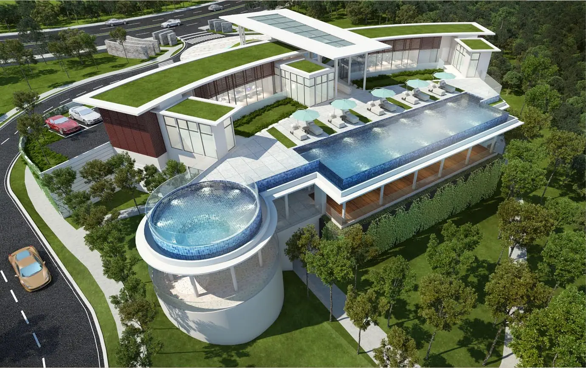
4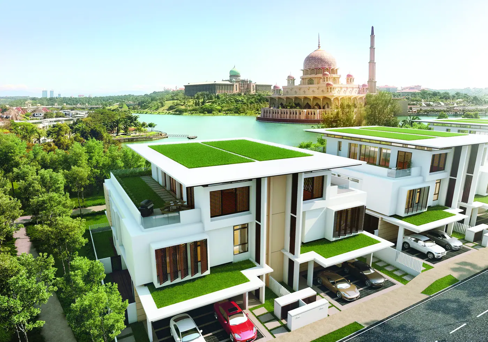
5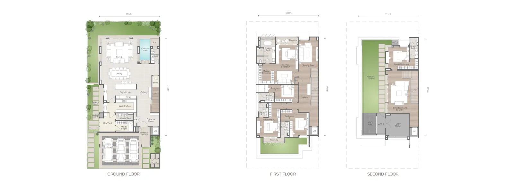
1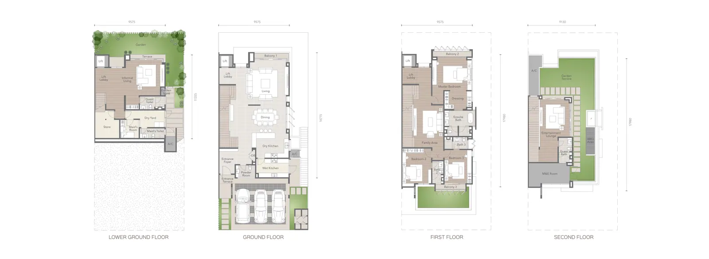
2Belum ada video rasmi pemaju untuk projek ini.
Pilih jenis unit, zum masuk/keluar, atau buka saiz penuh. Pelan daripada bahan rasmi pemaju.
Ukuran rasmi & susun atur akhir tertakluk kepada pelan diluluskan PBT dan SPA.
Ruang tamu, dapur, bilik — klik untuk besarkan. Render/imej contoh unit oleh pemaju.
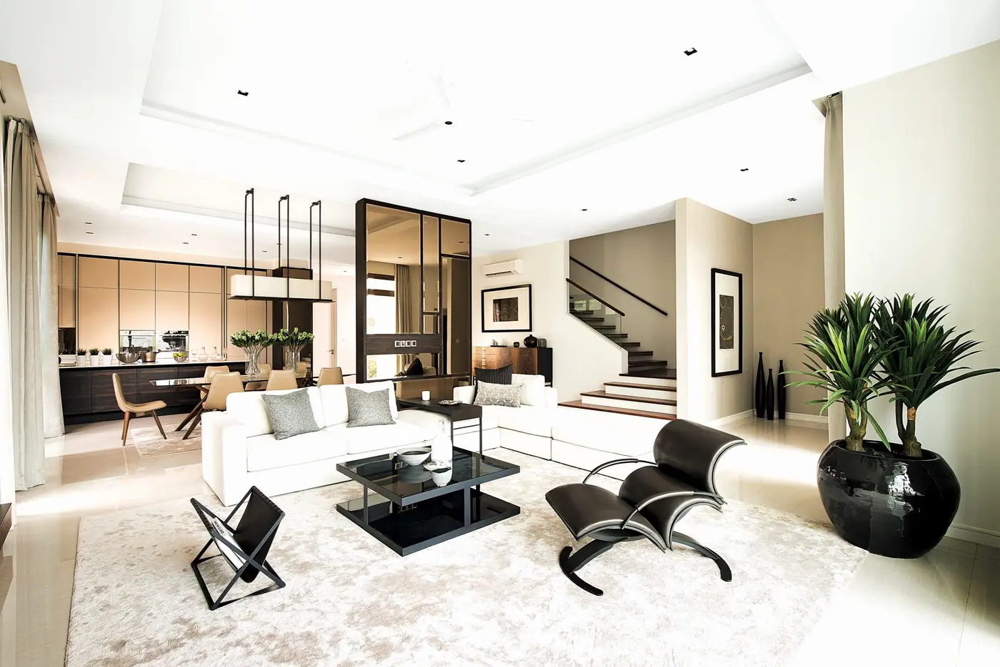
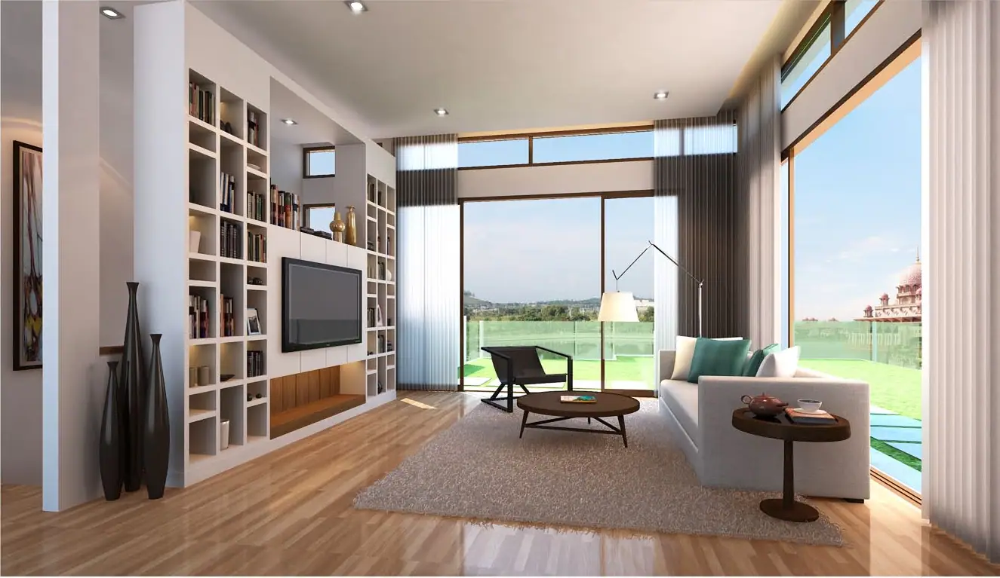
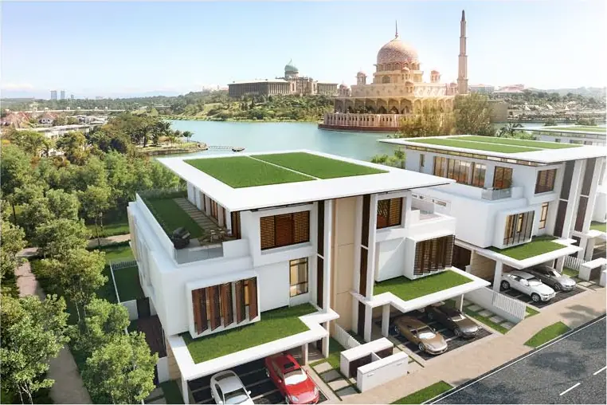
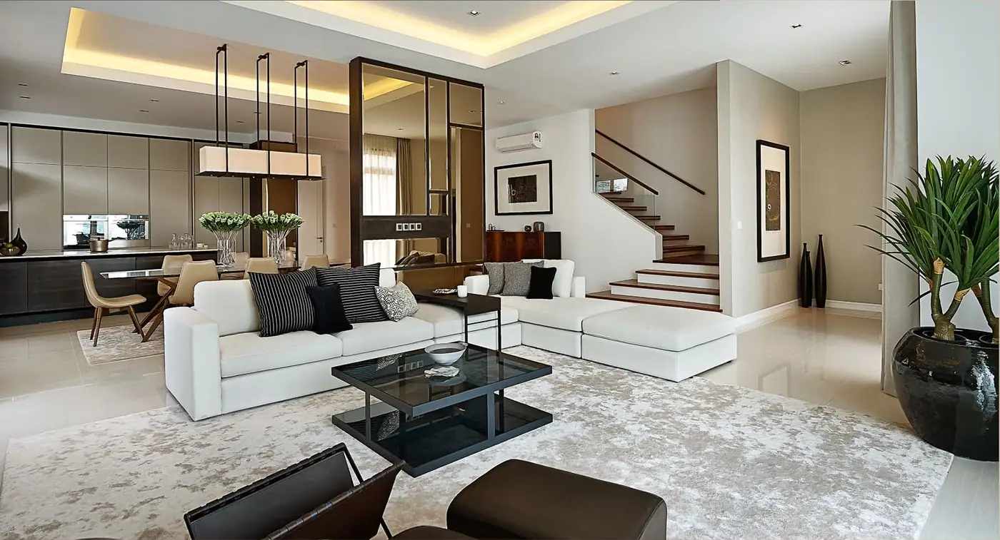
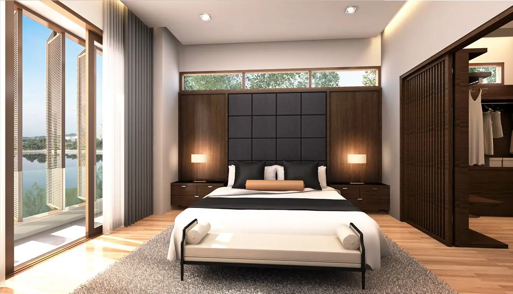
Fakta projek dipaparkan sebagai grafik supaya senang dibandingkan dengan projek lain.
| Pemaju berlesen | Putrajaya Homes Sdn Bhd (PjHOMES — Putrajaya Holdings) |
|---|---|
| No. lesen pemaju | Lesen entiti: 7479/03-2028/0489(R) (entiti berlesen kumpulan PjH) — nombor untuk projek ini perlu disahkan dari brosur |
| No. permit iklan & jualan | perlu diisi daripada brosur berpermit |
| Pihak berkuasa tempatan | Perbadanan Putrajaya |
| Rujukan pelan bangunan | perlu diisi daripada brosur berpermit |
| Pegangan tanah | Freehold (kekal) |
| Tarikh jangkaan siap | perlu diisi daripada brosur berpermit |
| Harga & unit setiap jenis | perlu diisi daripada brosur berpermit |
| Ejen diberi kuasa | IQI Realty — Zahir (PEA 2684) & Fadilah (PEA 2313) |
Dikemas kini 2026-09-12.
Lawatan showroom, semak baki unit dan bantu semak kelayakan pinjaman (DSR) — tanpa kos.
Penafian: Render = artist's impression. Maklumat produk daripada laman rasmi pemaju; butiran permit perlu disahkan dengan brosur berpermit. Render = artist's impression. Imej & video = bahan pemaju (hak pemaju).